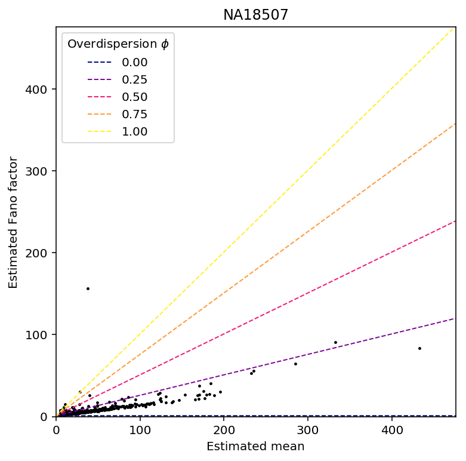
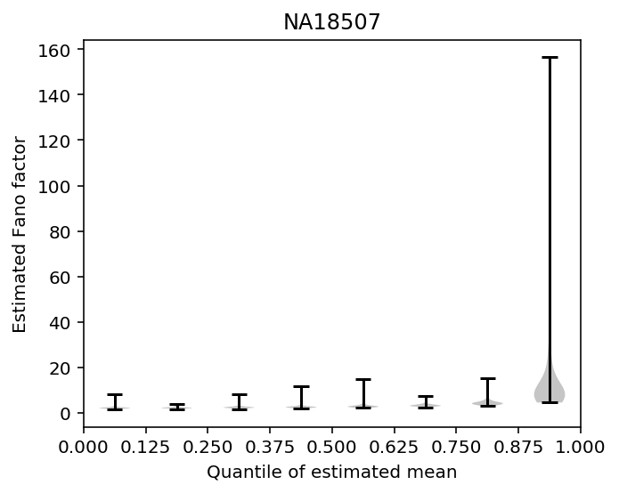
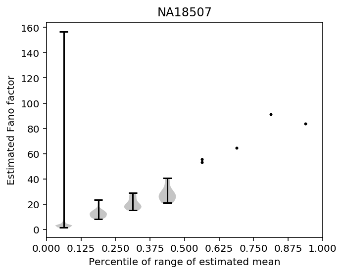
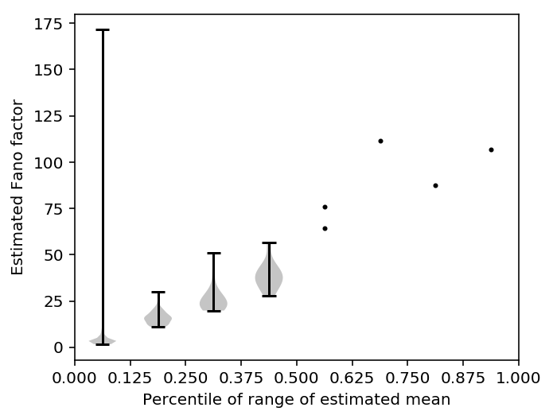
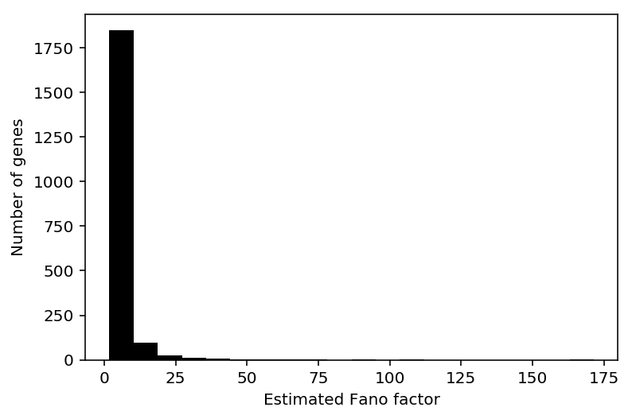

Mean/dispersion estimation
Introduction
We take a modular approach to call QTLs:
- Estimate a mean and a dispersion for each individual
- Treat the mean/dispersion as continuous phenotypes and perform QTL mapping
Here, we solve (1).
- We implement CPU-based ML estimation
- We estimate per-gene indexes of dispersion accounting for the fact that data came from multiple individuals
Model specification
Let \(r_{ijk}\) denote the number of molecules for individual \(i\), cell \(j\), gene \(k\). Let \(R_{ij}\) denote a size factor for each cell.
\[ r_{ijk} \sim \pi_{ik} \delta_0(\cdot) + (1 - \pi_{ik})\text{Poisson}(\cdot; R_{ij} \mu_{ik} u_{ijk}) \]
\[ u_{ijk} \sim \text{Gamma}(\cdot; \phi_{ik}^{-1}, \phi_{ik}^{-1}) \]
Here, \(\mu_{ik}\) is proportional to relative expression (Pachter 2011), and \(\phi_{ik}\) is the variance of expression noise.
Considering just the Poisson component, marginalizing out \(u\) yields the log likelihood:
\[ l(\cdot) = \ln(1 - \pi_{ik}) + r_{ijk} \ln\left(\frac{R_{ij}\mu_{ik}\phi_{ik}}{1 + R_{ij}\mu_{ik}\phi_{ik}}\right) - \phi_{ik}^{-1} \ln(1 + R_{ij}\mu_{ik}\phi_{ik}) + \ln \Gamma(r_{ijk} + \phi_{ik}^{-1}) - \ln \Gamma(r_{ijk} + 1) - \ln \Gamma(\phi^{-1}) \]
Then, marginalizing over the mixture yields the log likelihood:
\[ \ln p(r_{ijk} \mid \cdot) = \ln(\pi_{ik} + \exp(l(\cdot)))\ \text{if}\ r_{ijk} = 0 \]
\[ \ln p(r_{ijk} \mid \cdot) = l(\cdot)\ \text{otherwise} \]
We have enough observations per mean/dispersion parameter that simply minimizing the negative log likelihood should give reasonable estimates.
This model is equivalent to a model where we assume that the underlying rate is a point-Gamma mixture:
\[ r_{ijk} \mid \lambda_{ijk} \sim \mathrm{Poisson}(\cdot; R_{ij}\lambda_{ijk}) \]
\[ \lambda_{ijk} \sim \pi_{ik} \delta_0(\cdot) + (1 - \pi_{ik}) \text{Gamma}(\lambda_{ijk}; \phi_{ik}^{-1}, \phi_{ik}^{-1}\mu_{ik}^{-1}) \]
The Gamma component of this mixture corresponds to \(\mu_{ik}u_{ijk}\) in the model above. Considering just the Gamma component, marginalizing out \(\lambda\) yields the log likelihood:
\[ \tilde{l}(\cdot) = \ln(1 - \pi_{ik}) + r_{ijk} \ln\left(\frac{R_{ij}}{R_{ij} + \phi_{ik}^{-1}\mu_{ik}^{-1}} \right) + \phi_{ik}^{-1} \ln\left(\frac{\phi_{ik}^{-1}\mu_{ik}^{-1}}{R_{ij} + \phi_{ik}^{-1}\mu_{ik}^{-1}}\right) + \ln\Gamma(r_{ijk} + \phi_{ik}^{-1}) - \ln\Gamma(r_{ijk} + 1) - \ln\Gamma(\phi_{ik}^{-1}) \]
It is clear \(l = \tilde{l}\), and therefore the marginal likelihoods (over the mixture components) are also equal.
numpy/scipy implementation
Optimize the negative log-likelihood.
def log(x): """Numerically safe log""" return np.log(x + 1e-8) def sigmoid(x): """Numerically safe sigmoid""" lim = np.log(np.finfo(np.float64).resolution) return np.clip(sp.expit(x), lim, -lim) def nb(theta, x, size): """Return the per-data point log likelihood NB(x; theta, size)""" mean, inv_disp = np.exp(theta) mean *= size assert mean.shape == x.shape return (x * log(mean / inv_disp) - x * log(1 + mean / inv_disp) - inv_disp * log(1 + mean / inv_disp) + sp.gammaln(x + inv_disp) - sp.gammaln(inv_disp) - sp.gammaln(x + 1)) def _nb(theta, x, size): """Return the mean negative log likelihood of x""" return -nb(theta, x, size).mean() def zinb(theta, x, size): """Return the mean negative log likelihood of x""" theta, logodds = theta[:2], theta[2] case_non_zero = -np.log1p(np.exp(logodds)) + nb(theta, x, size) case_zero = np.logaddexp(logodds - np.log1p(np.exp(logodds)), case_non_zero) return -np.where(x < 1e-8, case_zero, case_non_zero).mean() def _fit_gene(chunk): if chunk[:,0].sum() == 0: # Without stringent QC, we need to handle the case of all zero observations return [-np.inf, -np.inf, np.inf, 0, 0] res0 = so.minimize(_nb, x0=[0, 0], args=(chunk[:,0], chunk[:,1])) pi0 = (chunk[:,0] == 0).sum() / chunk.shape[0] res = so.minimize(zinb, x0=list(res0.x) + [sp.logit(pi0 + 1e-8)], args=(chunk[:,0], chunk[:,1])) if res0.fun < res.fun: # This isn't a likelihood ratio test. Numerically, our implementation of # ZINB can't represent pi = 0, so we need to use a separate implementation # for it log_mu, neg_log_phi = res0.x logit_pi = -np.inf else: log_mu, neg_log_phi, logit_pi = res.x mean_by_sample = chunk[:,1].ravel() * np.exp(log_mu) var_by_sample = mean_by_sample + np.square(mean_by_sample) * np.exp(-neg_log_phi) mean_by_ind = mean_by_sample.mean() var_by_ind = (np.square(mean_by_sample - mean_by_ind) + var_by_sample).mean() return [log_mu, -neg_log_phi, logit_pi, mean_by_ind, var_by_ind] def fit_gene(chunk, bootstraps=100): orig = _fit_gene(chunk) B = [] for _ in range(bootstraps): B.append(_fit_gene(chunk[np.random.choice(chunk.shape[0], chunk.shape[0], replace=True)])) se = np.array(B)[:,:2].std(axis=0) return orig + list(se.ravel())
Computing analytic SE runs into numerical problems.
def _pois(theta, x, size): mean = np.exp(theta) mean *= size return (x * log(mean) - mean - sp.gammaln(x + 1)).mean() def _pois_jac(theta, x, size): mean = np.exp(theta) return mean * (x / mean - size).mean() def _nb_jac(theta, x, size): mean, inv_disp = np.exp(theta) T = (1 + size * mean / inv_disp) return mean * (x / mean - size / inv_disp * (x + inv_disp) / T).mean() def check_gradients(x, f, df, args=None, num_trials=100): x = np.array(x) y = f(x, *args) analytic_diff = df(x, *args) error = [] for i in range(num_trials): eps = np.random.normal(scale=1e-4, size=x.shape) num_diff = (f(x + eps, *args) - y) / eps error.append(abs(num_diff - analytic_diff)) return np.array(error)
Check the parameter estimation on simulated data.
def simulate(num_samples, size=None, log_mu=None, log_phi=None, logodds=None, seed=None): if seed is None: seed = 0 np.random.seed(seed) if log_mu is None: log_mu = np.random.uniform(low=-12, high=-8) if log_phi is None: log_phi = np.random.uniform(low=-6, high=0) if size is None: size = 1e5 if logodds is None: prob = np.random.uniform() else: prob = sp.expit(logodds) n = np.exp(-log_phi) p = 1 / (1 + size * np.exp(log_mu + log_phi)) x = np.where(np.random.uniform(size=num_samples) < prob, 0, np.random.negative_binomial(n=n, p=p, size=num_samples)) return np.vstack((x, size * np.ones(num_samples))).T def evaluate(num_samples, num_mols, log_mu, log_phi, logodds, trial): x = simulate(num_samples=num_samples, size=num_mols, log_mu=log_mu, log_phi=log_phi, logodds=logodds, seed=trial) keys = ['num_samples', 'num_mols', 'log_mu', 'log_phi', 'logodds', 'trial', 'log_mu_hat', 'log_phi_hat', 'logodds_hat', 'mean', 'var'] result = [num_samples, num_mols, log_mu, log_phi, logodds, trial] + list(_fit_gene(x)) result = {k: v for k, v in zip(keys, result)} # Important: follow edgeR here eps = .5 / num_mols log_cpm = np.log(x[:,0] + eps) - np.log(x[:,1] + 2 * eps) + 6 * np.log(10) result['mean_log_cpm'] = log_cpm.mean() result['var_log_cpm'] = log_cpm.var() return result
#!/usr/bin/env python3 <<zinb-imports>> import multiprocessing as mp import sqlite3 <<np-zinb-impl>> <<sim-impl>> args = [(num_samples, num_mols, log_mu, log_phi, logodds, trial) for num_samples in np.linspace(100, 1000, 5).astype(int) for num_mols in 1e3 * np.linspace(100, 1000, 5).astype(int) for log_mu in np.linspace(-12, -6, 7) for log_phi in np.linspace(-6, 0, 7) for logodds in np.linspace(-3, 3, 7) for trial in range(10)] with mp.Pool() as pool: result = pd.DataFrame.from_dict(pool.starmap(evaluate, args)) with sqlite3.connect('/project2/mstephens/aksarkar/projects/singlecell-qtl/browser/browser.db') as conn: result.to_sql(name='simulation', con=conn, index=False, if_exists='replace')
sbatch --partition=broadwl --mem=4G --job-name sim -n1 -c28 --exclusive #!/bin/bash source activate scqtl python /scratch/midway2/aksarkar/singlecell/density-estimation/sim.py
Submitted batch job 45352965
Use this to check the parameter estimation for a particular gene/individual.
def extract_data(ind, gene): with sqlite3.connect('/project2/mstephens/aksarkar/projects/singlecell-qtl/browser/browser.db') as conn: umi = pd.read_sql("""select umi.value, annotation.size from umi, annotation where annotation.chip_id == ? and gene == ? and umi.sample == annotation.sample;""", con=conn, params=(ind, gene)) return umi
Shard the data to parallelize over nodes. During this pass, write the data out to the database.
Important notes:
- We need to use the actual number of molecules detected as the size factor, not the sum of QC'ed counts
- We need to estimate relative abundance for all genes (to match bulk), not just those which passed QC
annotations = pd.read_table('/project2/mstephens/aksarkar/projects/singlecell-qtl/data/scqtl-annotation.txt') annotations['sample'] = annotations.apply(lambda x: '{chip_id}.{experiment:08d}.{well}'.format(**dict(x)), axis=1) annotations['size'] = annotations['mol_hs'] annotations = annotations[['sample', 'chip_id', 'size']] with sqlite3.connect('/project2/mstephens/aksarkar/projects/singlecell-qtl/browser/browser.db') as conn: annotations.to_sql(name='annotation', con=conn, if_exists='replace') conn.execute('create index ix_annotation on annotation(chip_id, sample);') keep_samples = pd.read_table('/project2/mstephens/aksarkar/projects/singlecell-qtl/data/quality-single-cells.txt', index_col=0, header=None) i = 0 with sqlite3.connect('/project2/mstephens/aksarkar/projects/singlecell-qtl/browser/browser.db') as conn: conn.execute('drop table if exists umi;') for chunk in pd.read_table('/project2/mstephens/aksarkar/projects/singlecell-qtl/data/scqtl-counts.txt.gz', index_col=0, chunksize=1000): print('Processing chunk {}'.format(i)) chunk = (chunk .loc[:,keep_samples.values.ravel()]) if not chunk.empty: chunk = (chunk .reset_index() .melt(id_vars='gene', var_name='sample') .merge(annotations, on='sample') .sort_values(['gene', 'chip_id', 'sample'])) chunk.to_csv('/scratch/midway2/aksarkar/singlecell/density-estimation/chunk-{}.txt.gz'.format(i), columns=['gene', 'chip_id', 'sample', 'value', 'size'], compression='gzip', sep='\t') chunk[['gene', 'sample', 'value']].to_sql(name='umi', con=conn, index=False, if_exists='append') i += 1 del chunk conn.execute('create index ix_umi on umi(gene, sample);')
Process each chunk in parallel.
def compute_breaks(chunk, by_ind=False): # Each subproblem has fixed size, so we can just split on integer indices # (instead of grouping) num_genes = len(set(chunk['gene'])) num_samples = len(set(chunk['sample'])) breaks = num_samples * np.arange(num_genes).reshape(-1, 1) if by_ind: num_samples_per_ind = chunk.iloc[:num_samples]['chip_id'].value_counts().sort_index().values # This can't be written += because of broadcasting breaks = breaks + np.cumsum(num_samples_per_ind).reshape(1, -1) else: # We need to get the right end point of each subproblem (exclusive) breaks += num_samples return breaks.ravel()
<<zinb-imports>> import argparse import gzip import os import multiprocessing as mp import sqlite3 <<np-zinb-impl>> <<process-chunk-impl>> with mp.Pool() as pool: chunk = pd.read_table('/scratch/midway2/aksarkar/singlecell/density-estimation/chunk-{}.txt.gz'.format(os.getenv('SLURM_ARRAY_TASK_ID'))) breaks = compute_breaks(chunk, by_ind=True) res = pool.map(fit_gene, np.split(chunk[['value', 'size']].values, breaks[:-1])) with gzip.open('/scratch/midway2/aksarkar/singlecell/density-estimation/result-{}.txt.gz'.format(os.getenv('SLURM_ARRAY_TASK_ID')), 'wt') as f: for b in breaks: gene, ind = chunk.iloc[b - 1][['gene', 'chip_id']] print(gene, ind, *res.pop(0), file=f)
sbatch --partition=broadwl --job-name="np-zinb" --mem=4G -a 0-20 -n1 -c28 --exclusive #!/bin/bash source activate scqtl python /scratch/midway2/aksarkar/singlecell/np-zinb.py
Submitted batch job 44962891
Populate the database.
with sqlite3.connect('/project2/mstephens/aksarkar/projects/singlecell-qtl/browser/browser.db') as conn: conn.execute('drop table if exists params;') for i in range(21): for chunk in pd.read_table('/scratch/midway2/aksarkar/singlecell/density-estimation/result-{}.txt.gz'.format(i), sep=' ', header=None, chunksize=1000): chunk.columns = ['gene', 'ind', 'log_mu', 'log_phi', 'logodds', 'mean', 'var', 'log_mu_se', 'log_phi_se'] chunk.to_sql(name='params', con=conn, index=False, if_exists='append') conn.execute('create index ix_params on params(gene, ind);')
Mean-variance relationship by individual
Read the estimated parameters.
with sqlite3.connect('/project2/mstephens/aksarkar/projects/singlecell-qtl/browser/browser.db') as conn: params = pd.read_sql('select * from params;', conn)
Plot the mean-variance relationship for one individual.
def plot_mean_var_by_gene(params, phi_hat=None, min_mean=5): subset = params[params['mean'] > min_mean] fano = subset['var'] / subset['mean'] lim = [0, 1.05 * subset['mean'].max()] grid = np.linspace(*lim, num=200) plt.clf() plt.gcf().set_size_inches(4, 4) plt.scatter(subset['mean'], fano, s=2, c='k') if phi_hat is not None: plt.plot(grid, (grid + np.square(grid) * phi_hat) / (grid + 1e-8), c='r', ls='--', lw=1) else: for phi in np.linspace(0, 1, 5): plt.plot(grid, (grid + np.square(grid) * phi) / (grid + 1e-8), label='{:.2f}'.format(phi), c=colorcet.cm['inferno'](phi), ls='--', lw=1) plt.legend(title='Overdispersion $\phi$') plt.xlim(lim) plt.ylim(0, 1.05 * fano.max()) plt.xlabel('Estimated mean') plt.ylabel('Estimated Fano factor') def plot_mean_var_by_bin(params, n_bin=8, min_mean=5, equal_bins=True): subset = params[params['mean'] > min_mean] if equal_bins: cut = pd.qcut label = 'Quantile of estimated mean' else: cut = pd.cut label = 'Percentile of range of estimated mean' subset['bin'] = cut(subset['mean'], n_bin) subset['fano'] = subset['var'] / subset['mean'] plt.clf() plt.gcf().set_size_inches(5, 4) for i, (k, g) in enumerate(subset.groupby('bin')): if len(g) < 10: plt.scatter((i + .5) * np.ones(g['fano'].shape[0]), g['fano'], c='k', s=4, label=k) else: res = plt.violinplot(g['fano'], positions=[i + .5], showextrema=True, showmedians=False, widths=.5) for v in res['bodies']: v.set_facecolor('.25') res['cbars'].set_color('k') res['cmins'].set_color('k') res['cmaxes'].set_color('k') plt.xticks(np.arange(n_bin + 1), ['{:.3f}'.format(x) for x in np.linspace(0, 1, n_bin + 1)]) plt.xlim(0, n_bin) plt.xlabel(label) _ = plt.ylabel('Estimated Fano factor')
Estimate a genome-wide dispersion parameter.
subset = params[params['ind'] == 'NA18507'] subset = subset[subset['mean'] > 5] phi_hat = sklm.LinearRegression(fit_intercept=False).fit(subset['mean'].values.reshape(-1, 1), subset['var'] / subset['mean'] - 1).coef_ phi_hat
array([0.17258245])
plot_mean_var_by_gene(params[params['ind'] == 'NA18507'], phi_hat=np.array([0.17258245])) _ = plt.title('NA18507')

Plot the mean variance relationship by percentile (equal-sized bins).
plot_mean_var_by_bin(params[params['ind'] == 'NA18507']) plt.title('NA18507')
Text(0.5,1,'NA18507')

Plot the mean variance relationship by binning the range of mean expression (unequal bins)
plot_mean_var_by_bin(params[params['ind'] == 'NA18507'], equal_bins=False) plt.title('NA18507')
Text(0.5,1,'NA18507')

Investigate the outlier gene.
gene_info = pd.read_table('/project2/gilad/singlecell-qtl/genome-ensembl-release-75/hs.saf')
fano_idxmax = params.groupby('ind').agg(lambda x: x.loc[x['fano'].idxmax()]['gene'])['gene'].value_counts().to_frame() fano_idxmax
gene ENSG00000110713 37 ENSG00000198886 7 ENSG00000198899 7 ENSG00000197061 1 ENSG00000206150 1 ENSG00000198727 1
gene_info.groupby('GeneID').agg(lambda x: x.iloc[0]).merge(fano_idxmax, left_index=True, right_index=True)
Chr Start End Strand Name gene ENSG00000110713 hs11 3692313 3692646 - NUP98 37 ENSG00000197061 hs6 26104104 26104518 + HIST1H4C 1 ENSG00000198727 hsMT 14747 15887 + MT-CYB 1 ENSG00000198886 hsMT 10760 12137 + MT-ND4 7 ENSG00000198899 hsMT 8527 9207 + MT-ATP6 7 ENSG00000206150 hs14 21500979 21502455 - RNASE13 1
Per-gene dispersion
The index of dispersion for observed data \(r_{ijk}\) at gene \(k\) is:
\[ D_k = \frac{V[r_{ijk}]}{E[r_{ijk}]} \]
where expectations (variances) are taken over individuals \(i\) and cells \(j\).
Let \(g_{ijk}\) denote the zero-inflated negative binomial density as defined above. Then, we have:
\[ r_{ijk} \sim \sum_{ijk} \frac{1}{N} g_{ijk}(\cdot) \]
Fixing gene \(k\), the mixture density has expectation:
\[ \mu_k = \frac{1}{N} \sum E[r_{ijk}] \]
and variance (Frühwirth-Schnatter 2006):
\[ \sigma^2_k = \frac{1}{N} \sum (E[r_{ijk}] - \mu_k)^2 + V[r_{ijk}] \]
Fixing individual \(i\) and cell \(j\), we have:
\[ E[r_{ijk}] = R_{ij} \mu_{ik} \]
\[ V[r_{ijk}] = \left(R_{ij} \mu_{ik} + (R_{ij} \mu_{ik})^2 \phi_{ik}\right) \]
Here, we ignore the factor of \((1 - \pi_{ik})\) under the assumption that excess zeros do not reflect biology.
with sqlite3.connect('/project2/mstephens/aksarkar/projects/singlecell-qtl/browser/browser.db') as conn: params = pd.read_sql('select * from params;', conn) gene_params = params.groupby('gene').apply(lambda x: pd.Series([x['mean'].mean(), (np.square(x['mean'] - x['mean'].mean()) + x['var']).mean()])).rename(columns={0: 'mean', 1: 'var'})
Estimate a genome-wide dispersion parameter.
subset = gene_params[gene_params['mean'] > 5] phi_hat = sklm.LinearRegression(fit_intercept=False).fit(subset['mean'].values.reshape(-1, 1), subset['var'] / subset['mean'] - 1).coef_ phi_hat
array([0.24051697])
Plot the mean-variance relationship over all genes, estimated using all of the data and accounting for the fact that data came from different individuals.
plot_mean_var_by_gene(gene_params, phi_hat=np.array([0.24051697])) _ = plt.title('Average over 53 individuals')

Bin the data and plot the distribution by bin.
plot_mean_var_by_bin(gene_params)

plot_mean_var_by_bin(gene_params, equal_bins=False)

Visualize the distribution of Fano factor.
gene_params['fano'] = gene_params['var'] / gene_params['mean']
plt.clf() plt.hist(gene_params[gene_params['mean'] > 5]['fano'], color='k', bins=20) plt.xlabel('Estimated Fano factor') plt.ylabel('Number of genes')
Text(0,0.5,'Number of genes')

Identify noisy genes by ordering with respect to estimated Fano factor.
np.percentile(gene_params[gene_params['mean'] > 5]['fano'], [90, 95, 99])
array([ 8.74266345, 13.2907511 , 31.59529237])
gene_info = pd.read_table('/project2/gilad/singlecell-qtl/genome-ensembl-release-75/hs.saf').groupby('GeneID').agg(lambda x: x.iloc[0])
gene_params[np.logical_and(gene_params['mean'] > 5, gene_params['fano'] > 31.595)].merge(gene_info, left_index=True, right_index=True).sort_values('fano', ascending=False).loc[:,['Chr', 'Name', 'mean', 'var', 'fano']].to_csv('/project2/mstephens/aksarkar/projects/singlecell-qtl/data/per-gene-fano.txt.gz', compression='gzip', sep='\t')